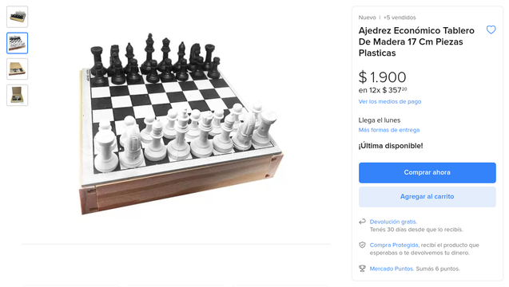

Tablero con piezas 3d
Este tablero lo compré hace años en Mercado Libre
Dato de color: en su momento me salió $300 😅
Le agregué las coordenadas con una cinta de papel para practicar y aprender un poco más mientras voy jugando.
Piezas en 3d
Como las piezas originales no me gustaban (y también para usar la impresora 3d), me bajé el siguiente set de piezas de thingiverse.
Lo que me gustó es que eran piezas Low Poly (este estilo poligonal que se ve en la imagen)

Por último, usé dos colores de PLA distintos: naranja para las blancas y negro para las negras.